This article retains its original experiments and examples. For current package usage, see the usage guide.
Optimization
Many and varied are the approaches to SNE optimization. The original SNE paper spends a fair amount of time discussing the difficulties of optimization, as does the SSNE paper (PDF), where the favored approach seems to be adding noise and using plain steepest descent. This inspired a paper suggesting a trust region approach, an alternative to the line search used in typical unconstrained optimization.
The t-SNE came along, which off-handedly mentions using delta-bar-delta, and the difficulty of optimization is never mentioned again. Conceptually it’s pretty straightforward, and I doubt most people had heard of this method outside of specialists in the neural network community.
Other methods have been used to optimize t-SNE or very similar cost functions: the NeRV paper used conjugate gradient, the Fast Multipole Method (FMM) used L-BFGS to optimize elastic embedding (EE) (PDF), the JSE paper optimizes JSE, NeRV, SNE and t-SNE using gradient descent with a diagonal approximation to the Hessian (similar to the method used in Sammon mapping) and the multi-scale SNE (PDF) and multi-scale JSE methods use L-BFGS (the latter again employing the diagonal Hessian approximation).
The Spectral Directions paper (with the same authors as the FMM-EE paper) introduced a quasi-Newton method using the Hessian based on a sparse approximation to just the attractive part of the t-SNE cost function. On a large dataset, it out-performed L-BFGS and conjugate gradient for optimizing t-SNE and EE although it didn’t compare the delta-bar-delta method for t-SNE, and only a back-tracking line search was used with L-BFGS. Nor is any early exaggeration used.
The JSE and multi-scale JSE papers use a series of optimizations with a decreasing perplexity (similar techniques are used in the SNE and NeRV papers), so it’s possible that other optimization methods do better when the input probabilities are modified during the initial iterations, although an increased perplexity would seem to have an opposite effect to early exaggeration in terms of relative emphasis on short and long distances.
It should be noted that in the Spectral Directions paper, the differences between L-BFGS, CG and spectral direction became pronounced only when looking at a 20,000-member subset of the MNIST digits dataset. The JSE papers, for instance, don’t look at datasets larger than 6,000 items (although also sampled from the MNIST digits). The FMM-EE paper used 60,000 digits from MNIST (presumably the training set) but only compared L-BFGS with plain gradient descent.
Yang and co-workers looked at Majorization-Minimization for optimizing t-SNE and compared it to L-BFGS, spectral directions and momentum-based methods for t-SNE with quite a variety of datasets of different sizes (up to N = 130 000). For some datasets they observe sub-optimal embeddings (L-BFGS) or outright divergence (spectral directions), but usually spectral directions outperforms L-BFGS in terms of the cost at a given amount of CPU time. However, their momentum method also out-performs L-BFGS, but it’s not clear how close this is to the DBD method: they describe it as being the addition of a momentum term to their gradient descent method, which in turn is described as using a line search. Also, they describe the momentum method as failing on the COIL-20 dataset due to a learning rate selection problem, but the original t-SNE paper has perfectly good results for COIL-20.
Häkkinen and co-workers described qSNE which uses L-BFGS for its optimization, and get good results with an order of magnitude fewer iterations than standard t-SNE, so that even though they use exact t-SNE (i.e. not even Barnes-Hut), they were able to apply qSNE to a dataset with N = 170 000 with only a couple of hours runtime. They also show that their results are pretty insensitive to their choice of Hessian approximation.
smallvis can’t handle large datasets, so we will also
restrict ourselves to nothing larger than a 6,000 subset of the MNIST
digits. But it certainly would be nice if we could just point L-BFGS (or
delta-bar-delta) at pretty much any cost function and not have to worry
about initialization and perplexity annealing or early exaggeration.
Datasets
See the Datasets page.
Details
If you want to know more about the provenance of the datasets, they are described in reasonable detail on the initialization experiment page.
The L-BFGS implementation is from the mize package. The memory size is 5, and a loose Wolfe line search was used with the More-Thuente method. These are pretty standard settings.
Settings
Results below were generated using the following commands
(exemplified by the iris dataset):
# Delta-Bar-Delta
tsne_iris_dbd <- smallvis(
iris,
method = "tsne",
perplexity = 40,
eta = 100,
max_iter = 1000,
verbose = TRUE,
Y_init = "spca",
scale = FALSE,
ret_extra = c("dx", "dy")
)
# L-BFGS
tsne_iris_lbfgs <- smallvis(
iris,
method = "tsne",
perplexity = 40,
eta = 100,
max_iter = 1000,
verbose = TRUE,
Y_init = "spca",
scale = FALSE,
ret_extra = c("dx", "dy"),
opt = list("l-bfgs", c1 = 1e-4, c2 = 0.9)
)SPCA without early exaggeration was chosen for simplicity. The initialization experiments suggested there was no particular reason to believe this was a bad choice. The DBD results given here aren’t exactly the same as those in the initialization experiment, due to various minor code changes since then.
Evaluation
For each initialization, the mean neighbor preservation of the 40
nearest neighbors, calculated using the quadra package. The
number reported is the mean average over all results and is labelled as
mnp@40 in the plots. 40 was chosen for these results to
match the perplexity.
For example, for the tsne_iris_dbd result given above,
the mnp@40 value is calculated using:
av_pres <- mean(quadra::nbr_pres(
tsne_iris_dbd$DX,
tsne_iris_dbd$DY,
tsne_iris_dbd$perplexity
))Again, more details in the initialization experiment page.
Results
Fashion (6,000)
 |
 |
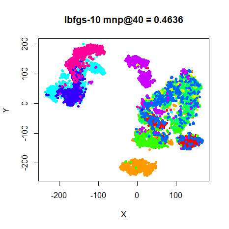 |
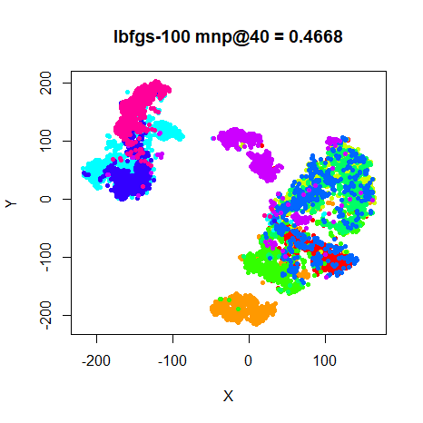 |
Using L-BFGS seems fine for the most part, until you get to the MNIST digits. Those are some ugly looking plots, but they are minima. Looking at the size of the steps that DBD takes versus L-BFGS during the optimization, L-BFGS will take much larger steps than DBD. Given the highly non-linear nature of the t-SNE cost function, the usual line search settings used in L-BFGS may be inappropriate.
Perplexity Scaling
What about the tactic of starting at a high perplexity and repeatedly optimizing at lower perplexities? Below is the L-BFGS result from starting at a perplexity of 2048 (the closest power of 2 to half the dataset size) and then halving the perplexity until a perplexity of 64 is reached, followed by a final optimization at 40. I should say I made no effort to restrict the number of iterations or function or gradient evaluations (although at larger perplexities, it converges quite quickly), so this is a very slow method and hence not really practical. But this provides a sense of how good results can get:
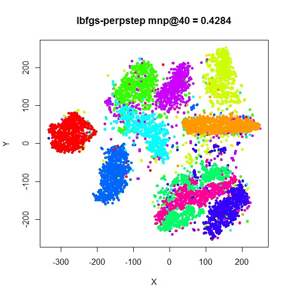
That’s much better. Can this be turned into a practical optimization method, i.e. one which can be used with the same number of iterations as starting from the target perplexity? We shall have to decide how to split the number of iterations between the higher perplexity values. The strategy outlined in the NeRV paper is to carry out ten steps of conjugate gradient at (what is effectively) a higher perplexity, followed by twenty steps of conjugate gradient at the target perplexity. So that’s a 1:2 ratio. Alternatively, the multiscale JSE paper simply suggests allowing up to 200 steps of L-BFGS per perplexity value, and when comparing with t-SNE with the DBD, allowing t-SNE the same number of evaluations. If we draw a comparison between early exaggeration and perplexity scaling (which both have the goal of avoiding shallow minima), the large-scale Barnes-Hut implementations tend to allow for a longer period of early exaggeration, stopping at iteration 250, rather than iteration 100, which coincides with the point at which the momentum is increased. So that suggests the first 250 iterations out of the standard 1000 can be equated with the perplexity scaling period. Arbitrarily, we’ll choose that: for the first 250 iterations we’ll do perplexity scaling, leaving 750 for the target perplexity. As a result, for the delta-bar-delta method, we should switch the momentum earlier, too. If the lower momentum is due to the influence of early exaggeration requiring milder optimization conditions, we could start the optimization with the momentum at its high value, but to be on the safe side, in the example below, we’ll just spend fewer iterations at the lower momentum.
It’s also of interest to see if the delta-bar-delta method also
benefits from stepping down from larger perplexities. Results were
generated using (with iris as an example):
iris_dbd_pstep <- smallvis_perpstep(
step_iter = 250,
X = iris,
scale = FALSE,
verbose = TRUE,
Y_init = "spca",
ret_extra = c("DX", "DY"),
perplexity = 40,
eta = 100,
mom_switch_iter = 185,
max_iter = 1000
)
iris_lbfgs_pstep <- smallvis_perpstep(
step_iter = 250,
X = iris,
scale = FALSE,
verbose = TRUE,
Y_init = "spca",
ret_extra = c("DX", "DY"),
perplexity = 40,
max_iter = 1000,
opt = list("l-bfgs")
)Results are shown with the equivalent non-stepped version from the previous results above on the left, and the perplexity stepped version on the right.
| dataset | perplexity = 40 | step perplexity |
|---|---|---|
| iris DBD |  |
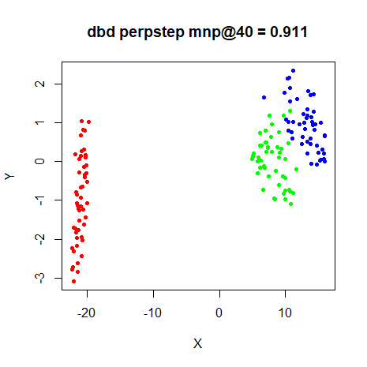 |
| iris L-BFGS |  |
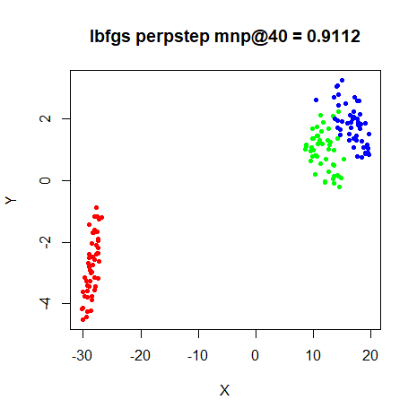 |
| s1k DBD |  |
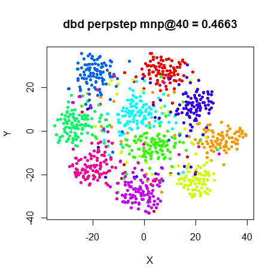 |
| s1k LBFGS |  |
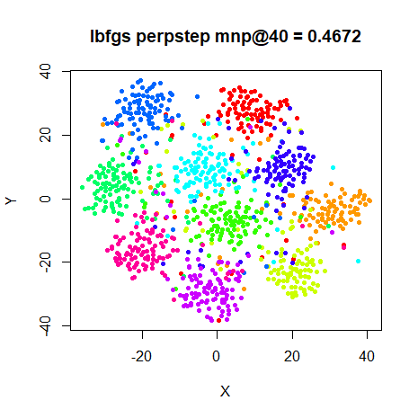 |
| oli DBD |  |
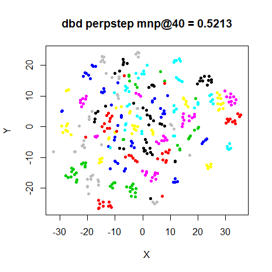 |
| oli LBFGS |  |
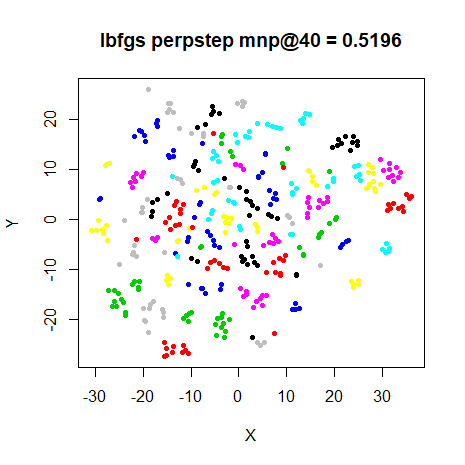 |
| frey DBD |  |
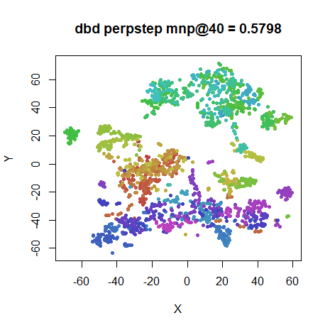 |
| frey LBFGS |  |
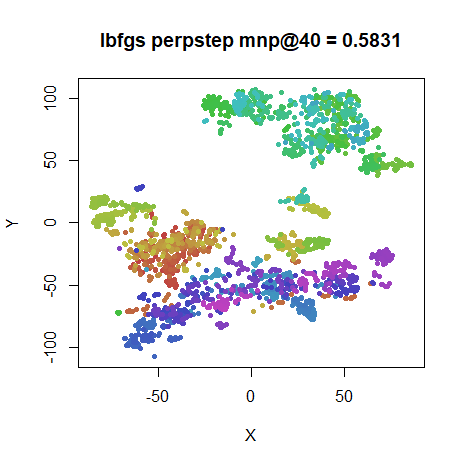 |
| COIL-20 DBD |  |
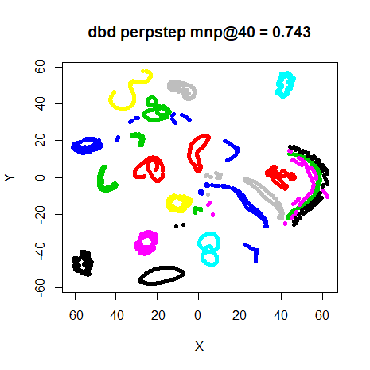 |
| COIL-20 LBFGS |  |
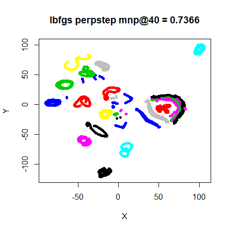 |
| MNIST DBD |  |
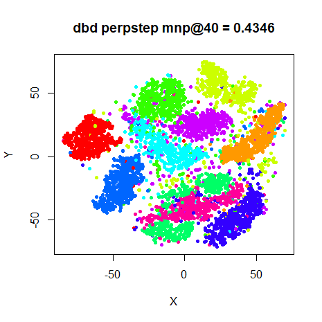 |
| MNIST LBFGS |  |
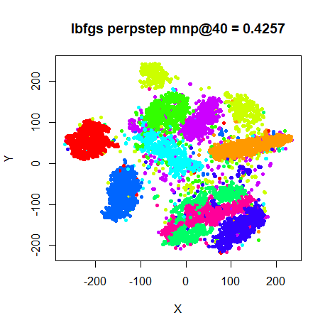 |
| Fashion DBD | |
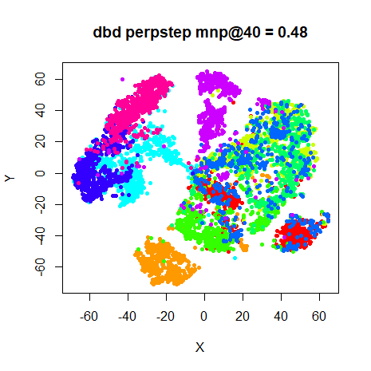 |
| Fashion LBFGS | |
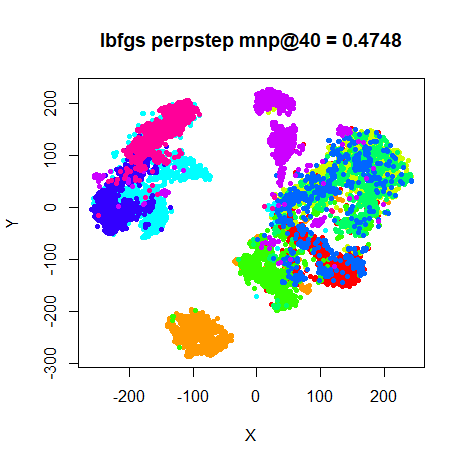 |
For L-BFGS, the perplexity stepping always improves the neighborhood preservation (although the difference is always small), but more importantly, the MNIST result looks a lot better. Maybe not quite as good as the result which allowed more than 1000 iterations, but it didn’t take as long.
The DBD results show a similar pattern, although the preservations don’t always improve. But the final results do look more similar to those from from the L-BFGS optimization when doing perplexity stepping, suggesting that these methods find minima which are closer to each other than without scaling.
There are two downsides of this method. The obvious one is that you have to carry out the perplexity calibration multiple times. At least as datasets grow larger this becomes a proportionally smaller part of the runtime, so it’s not like carrying out 5 perplexity calibrations requires 5 times the CPU time. A more minor issue is that the optimization starts from scratch for each perplexity. If, as the spectral direction paper suggests, L-BFGS has difficulties making progress at early iterations because of a lack of information with which to approximate the Hessian, we waste proportionally more of the iterations we have available by effectively resetting the memory of the optimizer multiple times.
Things can still go wrong. Here are two plots of the MNIST subset,
both initialized from the Laplacian Eigenmap. The left hand image
retains a memory of 5 vectors, the right hand version uses
50:
| memory = 5 | memory = 50 |
|---|---|
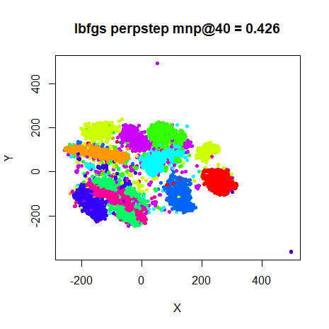 |
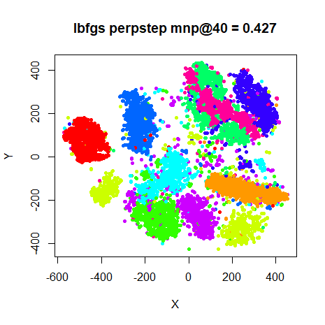 |
The left hand side plot shows there are a few outlying points. This is something I see quite a lot with the L-BFGS minimizations: a small number of points get pushed a long way out, and then due to the small gradient associated with long distances, take a large number of iterations to rejoin the main embedding, or as we see in this case, don’t get back at all. The right hand plot shows that upping the memory used by the minimization helps in this case, but I don’t have any reason to believe that more memory is guaranteed to work.
Conclusions
If you want to use L-BFGS to optimize the t-SNE cost function, you should probably use the perplexity stepping method to maximize your chances of getting a good result. Of course, you can just use the standard delta-bar-delta method when it comes to t-SNE. But hopefully these findings also apply to other cost functions where DBD doesn’t work as well.
August 16 2020: What about qSNE?
The qSNE source is available. Based on my understanding of that, it does the following by default:
- no scaling of the input.
- a perplexity of 30 is used.
- initialization via PCA, then rescaling to standard deviation of 1.
You can provide your own input via (
-i). - no early exaggeration.
- L-BFGS uses the ten previous iterates/gradients for its memory. This
can be modified with the
-moption. - the line search is a simple Armijo backtracking search, with the
constant in the Armijo condition test being
c1 = 0.5, starting at \alpha = 1 at each iteration, and halving \alpha during backtracking. The value ofc1can be adjusted via the-Loption. - a check on the relative error of the cost is applied at every
iteration, with a tolerance of 1e-4 (adjustable via the
-toption). Because the backtracking search requires evaluating the cost, there’s no extra computational expense to doing a tolerance check every iteration. To avoid premature convergence, the tolerance check is not applied for the first 15 iterations. - if you set “compatibility mode” (
-C), you get the usual delta-bar-delta optimization used in Rtsne, along with early exaggeration and the input is scaled. However, the initialization doesn’t change.
With mize installed, you can get something close to the qSNE defaults using:
iris_qsne <- smallvis(
iris,
Y_init = "pca",
Y_init_sdev = 1,
opt = list(
"l-bfgs",
line_search = "backtracking",
c1 = 0.5,
memory = memory,
try_newton_step = TRUE,
step_next_init = 1,
step_down = 0.5
),
epoch = 1,
tol = 1e-4,
tol_wait = 15,
scale = FALSE,
perplexity = 30
)qSNE optimization is much faster than smallvis for the datasets
considered here because although it does not use any approximations, its
implementation is multi-threaded. However, the PCA-based initialization
is not very efficient for high-dimensional datasets: on my machine,
oli with 4 096 features, took nearly two minutes to
complete, and coil20 with 16 384 features, took nearly two
hours. To avoid spending time generating the PCA initializations
multiple times, for all the results below, I generated the PCA input for
both qsne and smallvis using a separate run of
smallvis with 0 iterations
(Y_init = "pca", Y_init_sdev = 1, max_iter = 0) and
exporting the smallvis results to a TSV file which can be
used as input to qsne with the -i option. To
make sure there was no major differences between how
smallvis generated PCA-based initialization and the
internal qsne initialization, I checked the output of
qsne with mnist6k and fashion6k
using both methods. Coordinates were identical in both cases.
In the results below, the images for each dataset are as follows:
- top left:
qsnewith default settings. - top right:
qsnewith-t0to force 1000 iterations. This is to account for the possibility that the default tolerance is too lenient for these datasets, and we might see better visualizations with a longer optimization. - bottom left:
qsnewith-Cto use the traditional delta-bar-delta optimization, calledGDMin the title which is how theqsnesource code refers to it. - bottom right:
smallvisattempting to provide an optimization as close to that of defaultqsneas possible.
The number of iterations and the cost are given for all images. For
the smallvis results only, the time taken, and counts of
the function (fn) and gradient (gr)
evaluations are also provided.
fashion6k
Results are very similar between smallvis (bottom right)
and qsne (top left): they converge at a similar iteration,
the cost values at convergence are similar, and visually the results
look similar. Unfortunately, the results don’t look that great: they
have all the problems mentioned above, particularly for
mnist6k and fashion6k.
The fashion6k result in particular has an outlier point.
Could it just be that the tolerance is too loose for these datasets? Not
really. fashion6k does clean up if it’s allowed to run for
longer, but the other datasets don’t do much, i.e. they are pretty well
optimized for visualization purposes. For mnist6k making it
optimize for longer has little effect on the result visually, but the
distances between points has now increased hugely. Running the L-BFGS
results for longer number of iterations removes most of its appeal for
t-SNE anyway.
Could it be that the initial coordinates aren’t great? Probably not.
The compatibility results (bottom left) use slightly different scaling
of the input data and early exaggeration, and find results which look
pretty much the same, except a much better result for
mnist6k is also obtained.
For iris and mnist6k, I looked at using the
more typical standard deviation for the initialized coordinates,
i.e. 1e-4 instead of 1, again by exporting PCA
results from smallvis. In both cases, qsne was
unable to make any progress at all, and the optimization terminates
after 15 iterations with the cost function unchanged. With the
compatibility options set, optimization proceeded almost identically as
when the coordinates were initialized with a standard devation of 1.
Finally, does the use of the Armijo line search cause issues for
L-BFGS, when a full Wolfe line search is usually recommended? I
experimented with modifying the qsne-like settings in
smallvis to use a Wolfe line search. For every dataset, on
the first iteration, a very large value of \alpha is chosen (greater than ten), but
subsequent iterations are always 1 or smaller. Restricting the maximum
value of \alpha to 1-10 doesn’t have
much effect on the results and they aren’t noticeably different (or
better) than those that use the Armijo line search. However, whe using a
Wolfe line search, the coordinates were able to be initialized from the
smaller standard deviation coordinates, and you can use early
exaggeration, although in that case you need to allow the maximum \alpha to be as large as it wants, as
otherwise the optimization seems unable to adapt when the exaggeration
is turned off.
The qsne results independently confirm my own findings
with L-BFGS: you might be able to get a result more quickly
than using delta-bar-delta, but it’s not necessarily a huge time saving
and based on my experience with mnist6k in particular, the
results can be mediocre, to put it mildly.
If for some reason Barnes-Hut t-SNE or FIt-SNE doesn’t work for your
needs and you are looking for fast non-approximate t-SNE results, then
qsne seems to be a good choice. However, based on these
results, I wouldn’t use the L-BFGS optimizer and would recommend
sticking with the “compatibility” mode, i.e. use the -C
option. I would also be wary of using the qSNE default initialization,
especially if you have high-dimensional data.